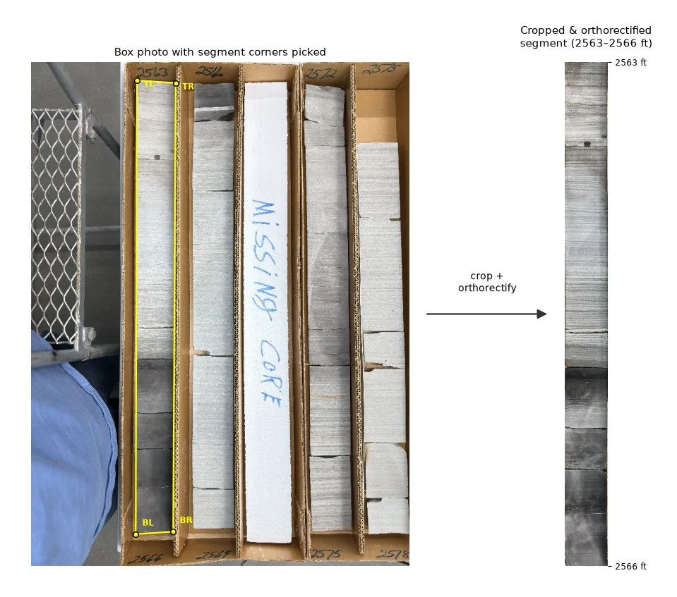
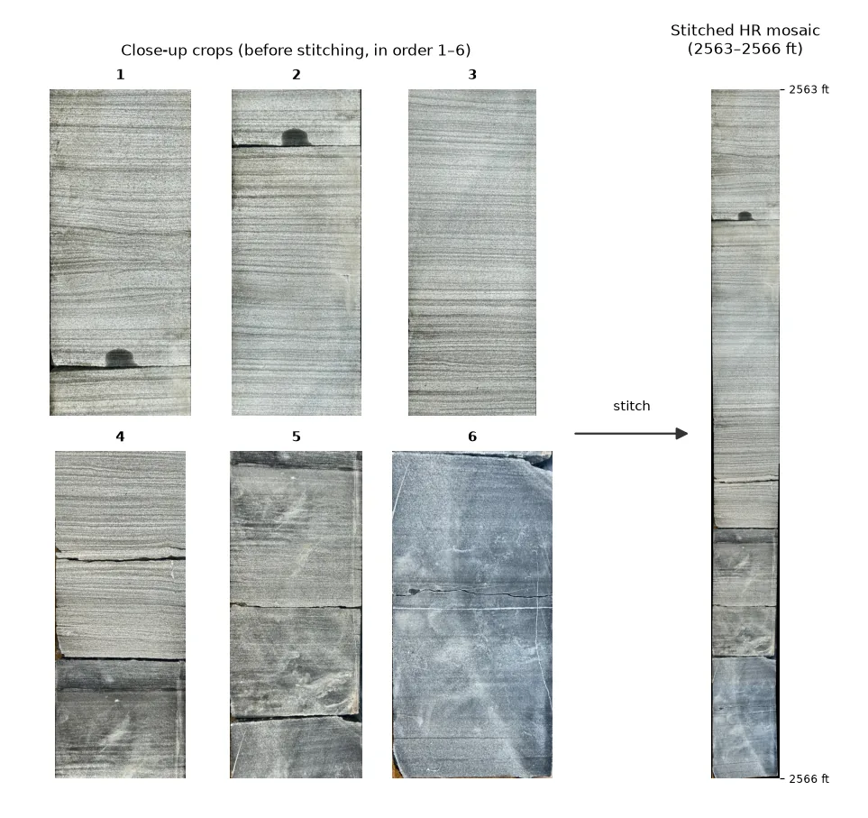

Python · Rock images
 pyRockImageLab
pyRockImageLab
pyRockImageLab (pyrockimagelab) crops, orthorectifies, stitches, and mosaics geological core photographs.
- Version0.1.0
- LicenseAGPL-3.0 or later
- Python3.10+
Overview
pyRockImageLab turns core photographs into clean, measurable images. It starts from a low-resolution photo of a whole core box: you pick the four corners of each core segment, and the tool cuts it out and straightens it into an orthorectified strip. It then stitches high-resolution close-up photos along that segment into one detailed mosaic. Corner picks are saved, so a later run can start from the same picks.
Hand samples, outcrop photos, and machine-learning identification are planned later.


Key features
Crop and orthorectify
Pick four corners on a box photo and get a straight, orthorectified core segment.
Stitch and mosaic
Stitch high-resolution close-ups along a segment into one mosaic.
Reusable picks
Corner picks are saved, so a later run can start from the same corners.
Browser app, notebook, command line
A browser app (pyrockimagelab-app), a worked example notebook on a small example core, and a pyrockimagelab command.
Browser app
Run pyrockimagelab-app and it opens in your web browser, with two jobs.
Installation
pip install pyrockimagelabStart the app with pyrockimagelab-app; it opens in your web browser.
License and citation
Cite
Lai, L.S.-H. (2026) pyRockImageLab, Zenodo, https://doi.org/10.5281/zenodo.23656974.
GNU Affero General Public License 3.0 or later.